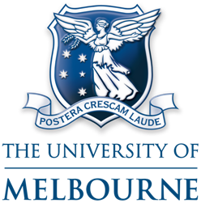

RESEARCH TEAM
The UADI project is led by Prof. Abbas Rajabifard in collaboration with 11 other investigators from five other Australian universities. The UADI teams in partner universities are as follows:
Team at The University of Melbourne
Team at The University of New South Wales
Team at The University of Queensland
Team at The University of Canberra
Team at The University of Western Australia
Team at The University of Wollongong
|  |
Project Team at The University of Melbourne |
Professor Abbas Rajabifard (Lead Chief Investigator) Director of Centre for Spatial Data Infrastructures and Land Administration Head of Department of Infrastructure Engineering abbas.r@unimelb.edu.au |
|
Professor Robert Stimson (Chief Investigator) Honorary, Department of Resource Management and Geography The University of Melbourne rstimson@unimelb.edu.au |
|
Dr Mohsen Kalantari (Chief Investigator) Associate Director, Centre for Spatial Data Infrastructures and Land Administration Chief Investigator - Technical Manager mohsen.kalantari@unimelb.edu.au |
|
Dr Soheil Sabri Research Fellow - Urban Analytics Project Manager soheil.sabri@unimelb.edu.au |
|
Dr Sam Amirebrahimi Research Fellow - Spatial Data Scientist System Architect and developer amis@unimelb.edu.au |
|
Dr Yiqun (Benny) Chen Research Fellow yiqun.c@unimelb.edu.au |
|
 |
Dr Muyiwa Agunbiade Research Fellow - Urban Analytics muyiwaea@unimelb.edu.au |
Azadeh Keshtiarast Research Assistant - Spatial Data Integration a.keshtiarast@unimelb.edu.au |
 |
Project Team at The University of New South Wales |
Professor Bill Randolph (Chief Investigator) Director of City Futures Research Centre,Built Environment b.randolph@unsw.edu.au |
|
Professor Christopher Pettit (Chief Investigator) Associate Director of City Futures Research Centre,Built Environment c.pettit@unsw.edu.au |
|
Aida Afrooz Technical Specialist - Urban Data, Mapping and Visualisation a.eslamiafrooz@unsw.edu.au |
|
Jonathan Doig Software Engineer – Spatial Systems j.doig@unsw.edu.au |
 |
Project Team at The University of Queensland |
Professor Jonathan Corcoran (Chief Investigator) Director of Queensland Centre for Population Research School of Geography, Planning and Environmental Management The University of Queensland jj.corcoran@uq.edu.au |
|
Professor Jane Hunter (Chief Investigator) Director of the eResearch Lab School of Information Technology and Electrical Engineering j.hunter@uq.edu.au |
|
Dr Tony Zhu Post-doc / Software engineer School of Information Technology and Electrical Engineering g.zhu@uq.edu.au |
|
Dr Tung-Kai (Paul) Shyy Research Fellow - Urban Data Analyst School of Information Technology and Electrical Engineering t.shyy@uq.edu.au |
|
Dr Salvatore Flavio Pileggi Research Fellow - Data Semantics and Analytics School of Information Technology and Electrical Engineering The University of Queensland s.pileggi@uq.edu.au |
| Project Team at The University of Western Australia |
|
Professor Sharon Biermann (Chief Investigator) Director of Planning and Transport Research Centre (PATREC) School of Earth and Environment sharon.biermann@uwa.edu.au |
|
 |
Dr Chao Sun Research Fellow School of Earth and Environment chao.sun@uwa.edu.au |
Gary McCarney Honorary Research Fellow School of Earth and Environment gary.mccarney@uwa.edu.au |
 |
Project Team at The University of Wollongong |
Professor Pascal Perez (Chief Investigator) Director of SMART Infrastructure Facility pascal_perez@uow.edu.au |
|
Dr Jun Ma Research Fellow - SMART Infrastructure Facility jun_ma@uow.edu.au |